Букет под повод и бюджет
День рождения, свидание, ресепшен в салоне – назовите повод и сумму, флористы соберут.
«Девочки оперативно собрали композицию, сориентировавшись на указанный бюджет.»Дарья П.
просп. Карла Маркса, 8 · центр Омска
Назовите повод и сумму – соберём букет. Или возьмите банчи для дома и составьте композицию сами.
выбираем: Тюльпаны
нажмите на ведро
Не обязательно знать названия сортов. Скажите, для кого и на какую сумму, – дальше поможем.
День рождения, свидание, ресепшен в салоне – назовите повод и сумму, флористы соберут.
«Девочки оперативно собрали композицию, сориентировавшись на указанный бюджет.»Дарья П.
Банч – пучок цветов одного сорта. Его берут, чтобы поставить дома или собрать свою композицию.
«Всегда беру здесь букеты и банчи, чтобы составлять домашние композиции»Светлана Симонова
Напишите в WhatsApp и заберите в студии. Или привезём: доставка за три часа, от 400 ₽.
«Заказываю обычно онлайн и забираю сама»Ольга Ложечкина
Цены: {{прайс на букеты и банчи}} Точную сумму назовём в WhatsApp – пришлите фото того, что понравилось.
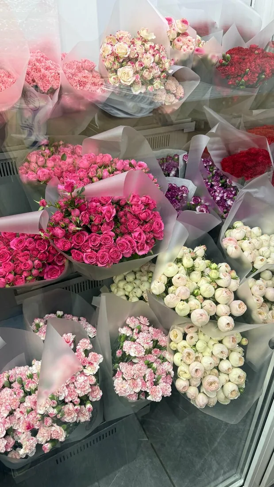
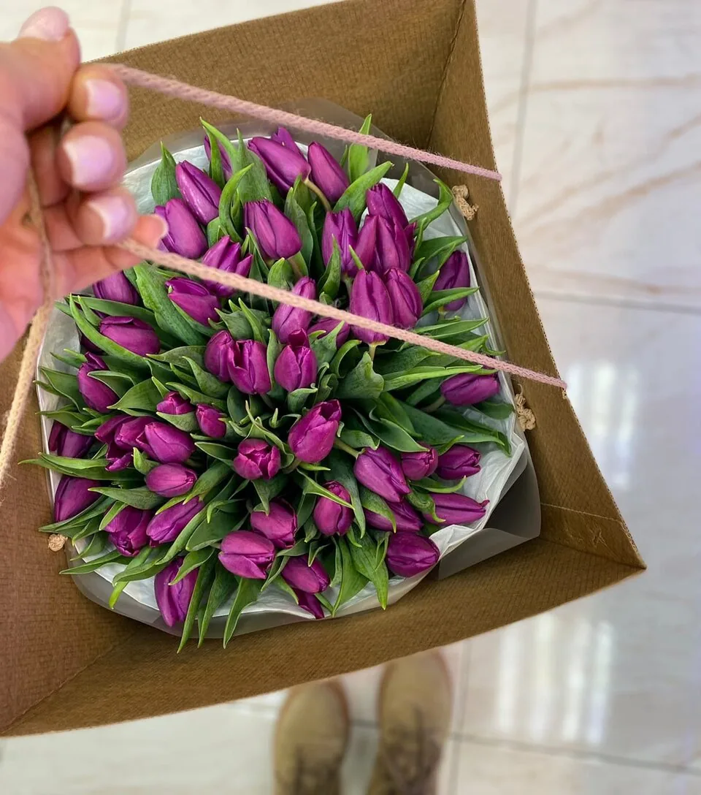
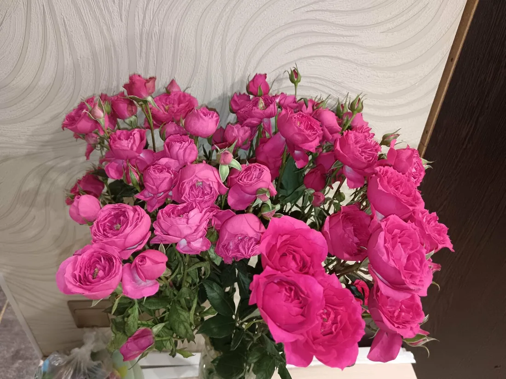
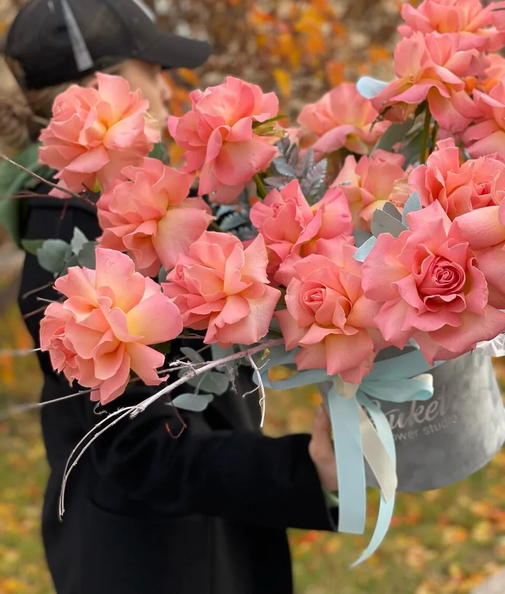
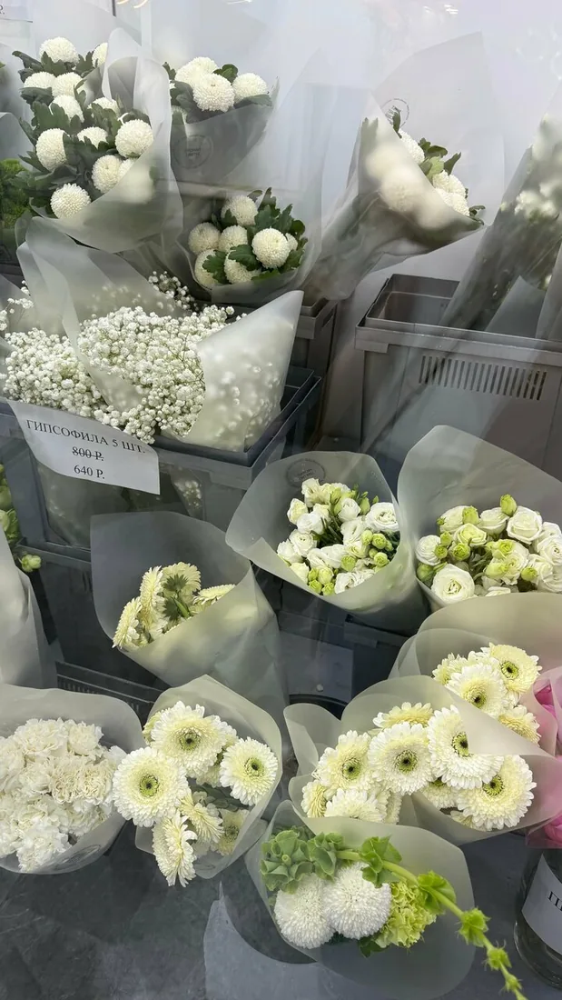
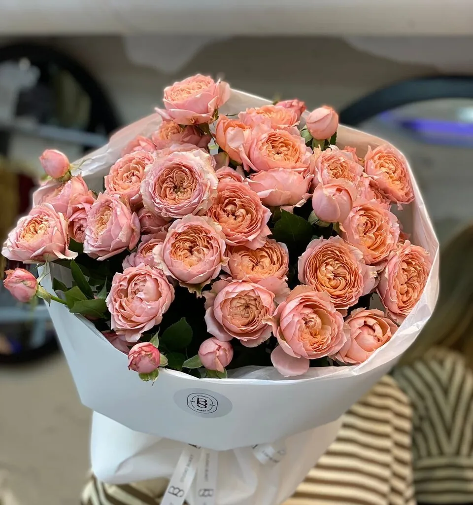
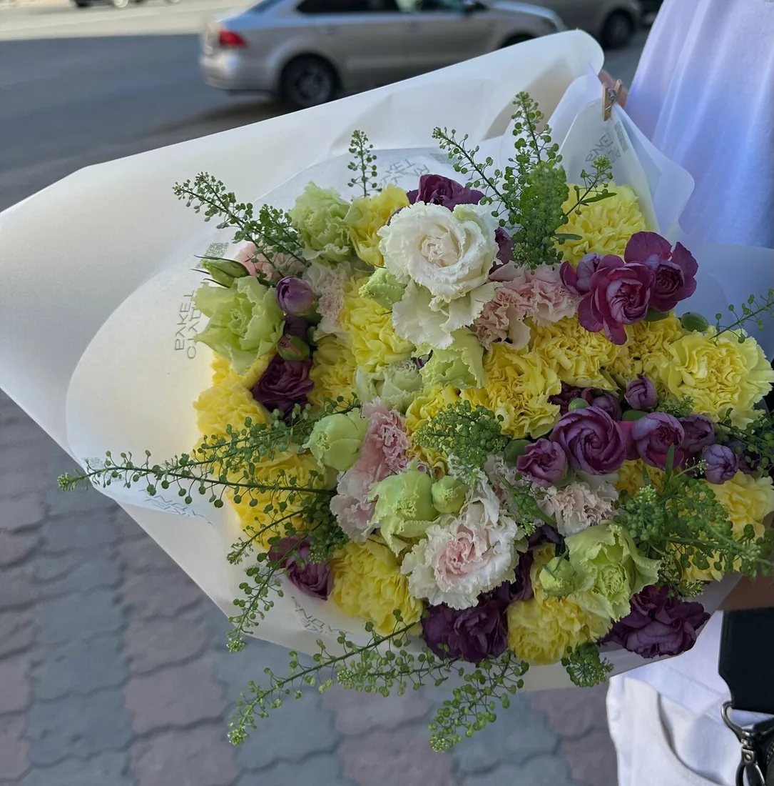
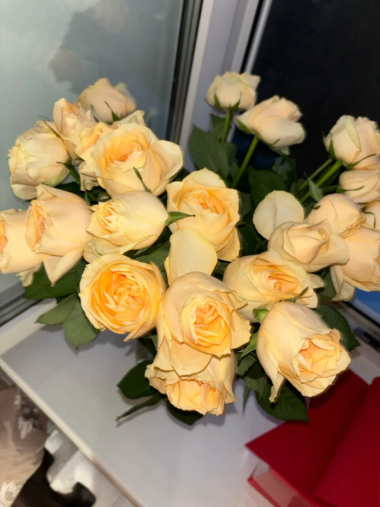
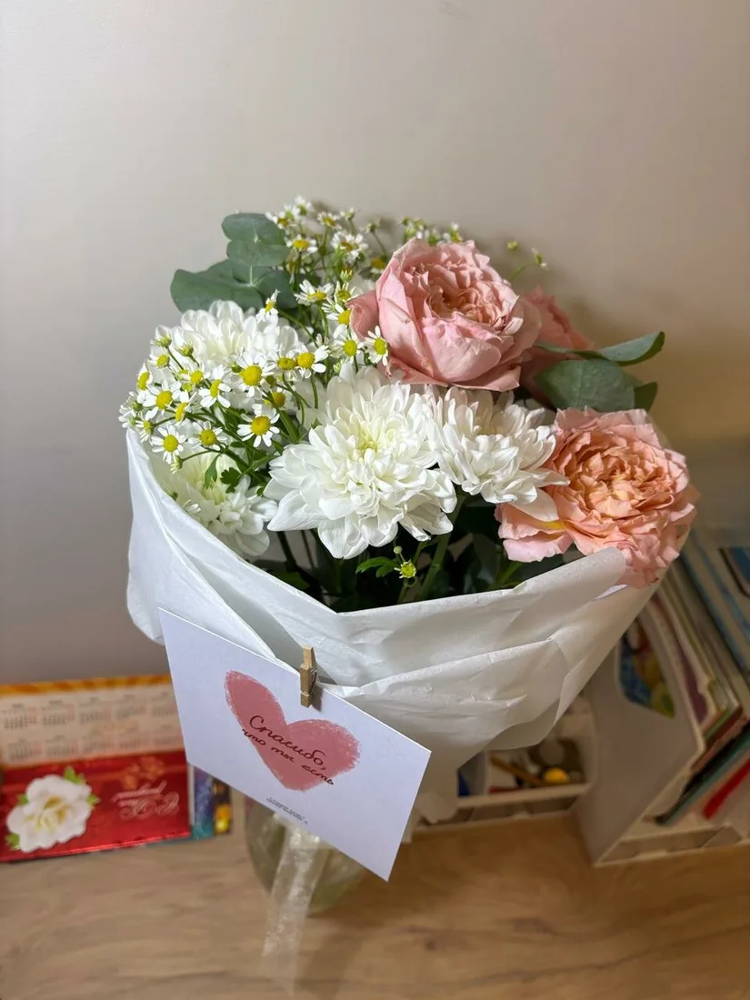
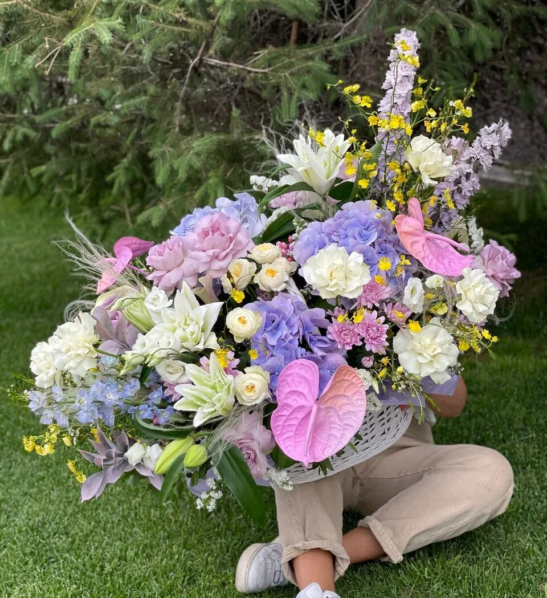
Воскресные маркеты – то, за что нас особенно хвалят покупатели.
Ближайший маркет: {{дата и время ближайшего маркета}}
Следить во ВКонтакте«Цветочные маркеты - отдельное прекрасное мероприятие для глаз и души»Татьяна Смолина
«Нравятся цветочные маркеты по воскресеньям. Большой ассортимент, вежливый персонал, прекрасные цветы.»Nelushka
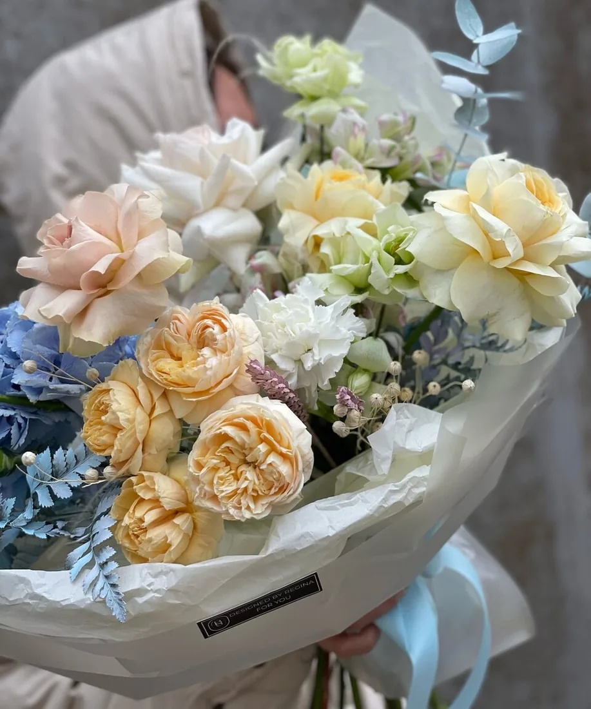
«Я вообще не знала, что хочу, доверилась полностью, единственное, что сказала им, что у меня будут красные туфли) результат превзошел мои ожидания»Анастасия, о своём свадебном букете
Расскажите о платье, цветах свадьбы или хотя бы о туфлях – предложим варианты. Цены: {{букет невесты и оформление: цены}}
Обсудить букет в WhatsApp4,550 оценок на Яндекс Картах
Всегда беру здесь букеты и банчи, чтобы составлять домашние композиции❤️ Качество - супер. Девочки всегда подскажут, что лучше взять. Цветы свежие, букеты - отличные. Отдельная радость - цены. Всегда можно подобрать цветы на любой бюджет. Спасибо, студия Букет! Успехов вашему делу🔥
Сегодня забежала в поиске интересных фермерских цветов, для ресепшен зоны косметологии. Девочки оперативно собрали композицию, сориентировавшись на указанный бюджет. Тыквы захватили внимание своей необычной формой, поэтому тоже уехали со мной на локацию 😍😁🤌🏼 Благодарю за помощь, в решении рабочей задачи! Все как всегда - 👍🏽❤️ Часто заезжаю за банчами для себя и близких, поэтому советую обратить внимание и на эти позиции, которые между прочим по отличной стоимости!
Девочки делали мне свадебный букет. Я вообще не знала, что хочу, доверилась полностью, единственное, что сказала им, что у меня будут красные туфли) результат превзошел мои ожидания - букет получился необычным и очень красивым! Спасибо вам огромное за ваш труд! Всегда берём цветы у вас, ни разу не подвели ещё ❤️❤️❤️
Примерно раз в месяц покупаю нам с мамой просто для удовольствия цветы в студии. Каждый раз очень довольна. Учитывая насколько сложная позиция срезка и нестабильная, у нас всегда все на высоте. Заказываю обычно онлайн и забираю сама , но бывает и просто заезжаю. Выбор , цена, качество на высоте . Это колоссальная работа , поддерживать такой ассортимент, по крайне адекватным ценам.
Часто прихожу сюда за цветами. Нравятся цветочные маркеты по воскресеньям. Большой ассортимент, вежливый персонал, прекрасные цветы.
Уютный, светлый магазин цветов, часто беру цветы для дома, в банчах очень удобно 👍🏻 всегда свежие. А еще у них фермерские цветы потрясающие 🤩
Флорист Анастасия сразила меня своей чуткость в составлении букетов. Большое спасибо!!!! Это невероятно, у меня слов нет, чтобы описать весь восторг. Студия букет, спасибо Вам за такого прекрасного человека. Вы 💛чудо.
Самые лучшие и свежие цветы всегда, и самое важное это прекрасное отношение персонала и флористов. Цветочные маркеты - отдельное прекрасное мероприятие для глаз и души ❤️
Чудесный магазин, с шикарным выбором. На мой взгляд , единственное место с подобным выбором. За креатив отдельное спасибо. Очередной раз удивили🙏😁
Добрый день! Заказываю всегда тут цветы! Цветы всегда свежие, сервис на высоте! Внимательное отношение к клиентам, спасибо ❤️, обязательно буду заказывать ещё!
Свежие цветы, хорошего качества, приятное впечатление и классное обслуживание. Выбрала под настроение несколько букетов, то, что хотела. Всё понравилось. Спасибо!💕
Замечательный й персонал 👍, помогли в выборе цветов и подсказали как проехать в нужное место! Я гость этого города! В отличном месте в самом центре 👍
Первый раз в магазине, очень понравилось, волшебно красивые сухие цветы и тыквы огонь🔥обязательно вернусь за живыми цветами🌸
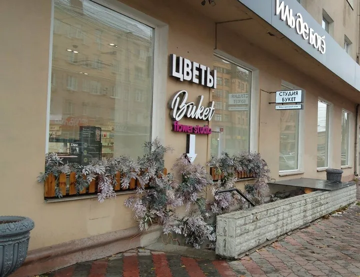
Открыть на Яндекс КартахИщите вывеску «Цветы Buket flower studio»